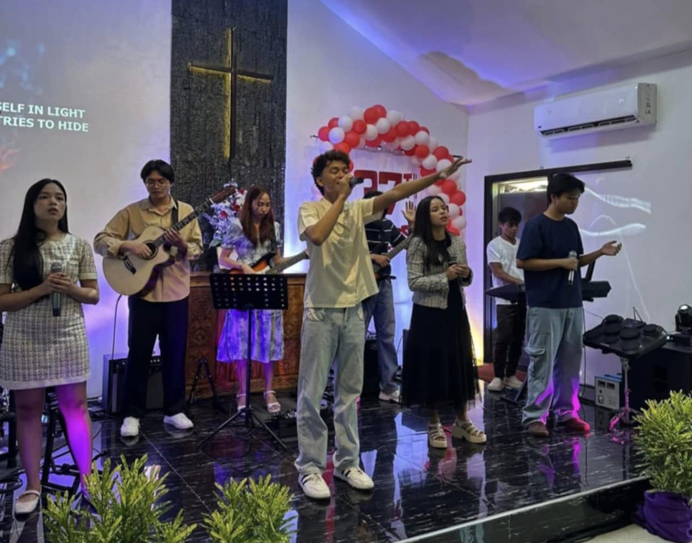
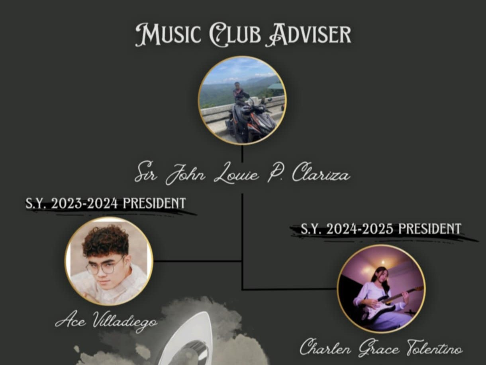

Hi! My name is Charlen Grace Tolentino.
I'm 15 years old and Grade 11 student under the MAWD strand (Mobile Application and Web Development).
I live on Talim Island, Binangonan, Philippines.
I really love music and enjoy playing different musical instruments. I'm also passionate about learning
new things every day because I believe that knowledge helps us grow as a person.
I admire the beauty of sunsets and nature, because they remind me to slow down and appreciate life's
simple blessings.
Aside from school, I also serve in our church ministry and I'm part of the LAM Team, where I get to share
my faith and talents with others.
This blog will be a place where I share my hobbies, experiences, and inspirations. I hope you enjoy reading
and learning with me!

My Skills and Interest
Ever since I was little, my family knew I had a gift for music. I could sit at the piano and play melodies simply
by listening. It felt like my ears were my teacher, guiding my fingers across the keys. My curiosity didn't stop
there, as a child, I eagerly explored different instruments, each one teaching me something new and shaping a wider
understanding of music. Over time, my passion grew deeper until it became a language I truly loved. By grade 10, I
found myself leading as the president of our school's music club, a chapter of my life I'll always treasure, because
it wasn't just about titles, but about sharing the passion that has always been part of who I am.

Aside from playing musical instruments, I also know how to draw and paint. Back in my elementary days, however, I chose
to set aside my love for arts and focus on my musical skills. Still, art never truly left me, it quietly waited in the
background, only coming alive when boredom struck or when inspiration whispered to pick up a pencil or a brush.
My Quote
"Life is made of seasons-some people stay, some moments fade. Treasure every minute with your family and loved ones,
because one day, the ordinary moments will be the memories you'll hold on to forever."